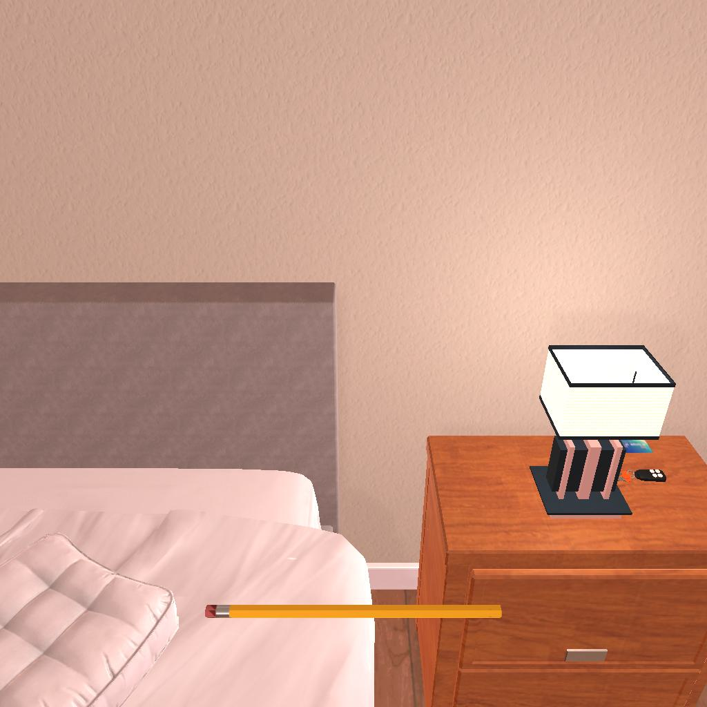

---------------------------------------------------------task: 2---------------------------------------------------------
--------------------------------------------------------------------------------------------------------------------------------------------------------------------
--------------------------------------------------------------------------------------------------------------------------------------------------------------------
Step:--------------------------------------------------------------------------8-------------------------------------------------------------------------------
----------------------------------------
VLM Prompt:
Image1:
**Instruction**
1. Analyze the provided image to identify all visible household objects, focusing on those relevant to the task description "look at pen under the desklamp."
2. Use the analysis of the image and the task hint "The agent must find an object of the desired type, locate and turn on a light source with the desired object in-hand." to answer the question: what is the most reasonable action in the choices for the task description "look at pen under the desklamp"?
4. Decide and write the answer using the template: The answer is: (i): , where i is the real number. If there is no desired object in the image, search every place based on **Initial Observation** to find the object. And if no one is exactly correct, choose a similar answer.
**Initial Observation**
You are in the middle of a room. Looking quickly around you, you can see bed (1-2), dresser (1), drawer (1-11), sidetable (1-2), desk (1), garbagecan (1), safe (1)
**Answer Choices**
(1): go to bed 1
(2): go to dresser 1
(3): go to bed 2
(4): go to sidetable 1
(5): go to drawer 2
(6): go to drawer 3
(7): go to drawer 4
(8): go to desk 1
(9): go to garbagecan 1
(10): go to drawer 5
(11): go to drawer 6
(12): go to drawer 7
(13): go to drawer 8
(14): go to drawer 9
(15): go to drawer 10
(16): go to drawer 11
(17): go to safe 1
(18): put pencil 2 in/on sidetable 2
(19): use desklamp 1
(20): examine pencil 2
(21): examine sidetable 2
**Answer**
Let's think step by step by following the instructions.
----------------------------------------
----------------------------------------
Original Response:
The task description is "look at pen under the desklamp." From the image provided, we can see a desklamp on sidetable 1 next to a bed with what appears to be a pencil lying beneath it. The pencil can be mistaken for a pen, so we can assume that this is the object of interest.
For the task, the agent must first find the object (the pen/pencil), then locate and turn on a light source (the desklamp) with the desired object in hand.
Based on the Initial Observation, the most reasonable action to accomplish the task would be to first go to the sidetable where the desklamp and the pencil (assumed pen) are located. The answer would then be to use the desklamp to look at the pen/pencil under it.
The answer is: (19): use desklamp 1.
----------------------------------------
----------------------------------------
>>> Refine Original VLM Response and Get Pure Action: use desklamp 1
----------------------------------------
-----------------------------------------------------------------
Running time: 20.578449964523315 seconds
Total Money: 0.5926299999999999
-----------------------------------------------------------------
-----------------------------------------------------------------
Text Observation:You turn on the desklamp 1.
-----------------------------------------------------------------
SUCCEED